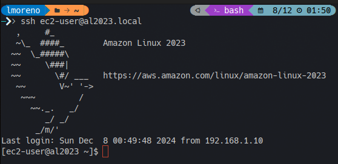

Descargar imagen más moderna desde: https://cdn.amazonlinux.com/al2023/os-images/latest/
vmware/ localizar el archivo con extensión .ova y descargar.al2023-vmware_esx-2023Extraer la imagen .vmdk del archivo descargado, donde <file> es el nombre sin extensión del archivo descargado:
tar -xvf <file>.ova <file>-disk1.vmdk
Convertir el archivo extraido desde formato .vmdk a formato .vdi, donde <image> es el nombre sin extensión del archivo extraido:
VBoxManage clonemedium disk <image>.vmdk <image>.vdi --format VDI
VBoxManage closemedium disk <image>.vmdk
VBoxManage closemedium disk <image>.vdi
Los comandos closemedium eliminan las imágenes .vmdk y .vdi de la lista de medios conocidos por VirtualBox para evitar problemas en la creación de la máquina virtual.
Crear archivos de configuración para cloud-init (más info):
Archivo: meta-data
local-hostname: al2023
Archivo: user-data
#cloud-config
users:
# Configure 'ec2-user' user
- default
- name: ec2-user
sudo: ALL=(ALL) NOPASSWD:ALL
groups: users, admin
shell: /bin/bash
lock_passwd: false
passwd: <hashed_password>
ssh_authorized_keys:
- ssh-rsa <rsa_public_key>
write_files:
# Enable password authentication for SSH and console
- path: /etc/cloud/cloud.cfg.d/90_enable_ssh_pwauth.cfg
content: |
runcmd:
- sed -i "s/^PasswordAuthentication.*/PasswordAuthentication yes/" /etc/ssh/sshd_config
- systemctl restart sshd
# Enable dynamic network configuration
- path: /etc/cloud/cloud.cfg.d/99-custom-network.cfg
permissions: '0644'
content: |
network:
version: 2
ethernets:
enp0s3:
dhcp4: true
# Enable Spanish keyboard layout for console
- path: /etc/vconsole.conf
permissions: '0644'
content: |
KEYMAP=es
runcmd:
- passwd -u ec2-user # Unlock console access to user 'ec2-user'
- systemctl restart systemd-vconsole-setup # Restart console service
- yum install -y avahi # Install and activate 'avahi'
- systemctl enable avahi-daemon
- systemctl start avahi-daemon
Archivo: network-config
network:
version: 2
ethernets:
enp0s3:
dhcp4: true
Observaciones:
local-hostname es el nombre de host que tendrá la máquina virtual, puede ser cualquier otro.<hashed_password> es la contraseña cifrada del usuario ec2-user que se obtiene mediante el comando: openssl passwd -6 <password><rsa_public_key> se obtiene del contenido del archivo ~/.ssh/id_rsa.pub que se genera con el comando: ssh-keygen -t rsaDesde el mismo directorio donde se han creado los archivos de configuración, crear el archivo seed.iso mediante el comando:
mkisofs -output seed.iso -volid cidata -joliet -rock -input-charset utf-8 meta-data user-data network-config
Desde VirtualBox pulsar el botón Nueva para crear una nueva máquina virtual con las siguientes características:
| Nombre y sistema operativo | |
| Nombre | Amazon Linux 2023 |
| Imagen ISO | <no seleccionado> |
| Tipo | Linux |
| Subtype | Fedora |
| Versión | Fedora (64-bit) |
| Hardware | |
| Memoria base | 2048 MB |
| Procesadores | 2 |
| Disco duro | |
| No añadir disco duro virtual | Activo |
Pulsar el botón Terminar para crear la máquina virtual.
Mover (o copiar) los archivos <image>.vdi y seed.iso dentro de la carpeta donde se encuentra creada la máquina virtual (Amazon Linux 2023).
Desde VirtualBox seleccionar la nueva máquina virtual Amazon Linux 2023, pulsar el botón Configuración, seleccionar el modo Expert y revisar los siguientes apartados:
| Pantalla | |
| Memoria de vídeo | 64 MB |
| Controlador gráfico | VMSVGA |
| Almacenamiento | |
| Controlador: IDE | seed.iso |
| Controlador: SATA | <image>.vdi |
| Red (Adaptador 1) | |
| Conectado a | Adaptador puente |
Observaciones:
<image>.vdi al Controlador SATA:
<image>.vdi.Comprobar si en la máquina host está instalado Avahi con el comando: sudo systemctl status avahi-daemon. En caso contrario, instalar el paquete avahi.
Iniciar la máquina virtual con el botón Iniciar.
Verificar la conectividad desde la máquina host hacia la máquina virtual con el comando: ping al2023.local.
Una vez verificada la conectividad, acceder vía SSH a la máquina virtual mediante el comando: ssh ec2-user@al2023.local.
ssh indicará que no se puede establecer la autenticidad del servidor y se pedirá una confirmación para continuar adelante, momento en el que el equipo será añadido a la lista de hosts conocidos.Una vez verificado el acceso por SSH, apagar la máquina con el comando: sudo poweroff.
Desde VirtualBox seleccionar la máquina virtual Amazon Linux 2023, pulsar el botón Configuración y en el apartado Almacenamiento quitar la imagen seed.iso del Controlador IDE y pulsar el botón Aceptar.
Pulsar de nuevo el botón Iniciar
¡¡ A disfrutar !!

seed.iso y al arrancar no consigo acceder desde la consolaEs necesario acceder vía SSH y desde el usuario ec2-user ejecutar el comando: sudo passwd -u ec2-user para que el desbloqueo del acceso por la consola sea definitivo.
Sí, para iniciar la máquina virtual sin modo consola, en VirtualBox pulsar en el desplegable a la derecha del botón Iniciar y seleccionar Inicio sin pantalla.
Generado el: 2024-12-08 13:37:52